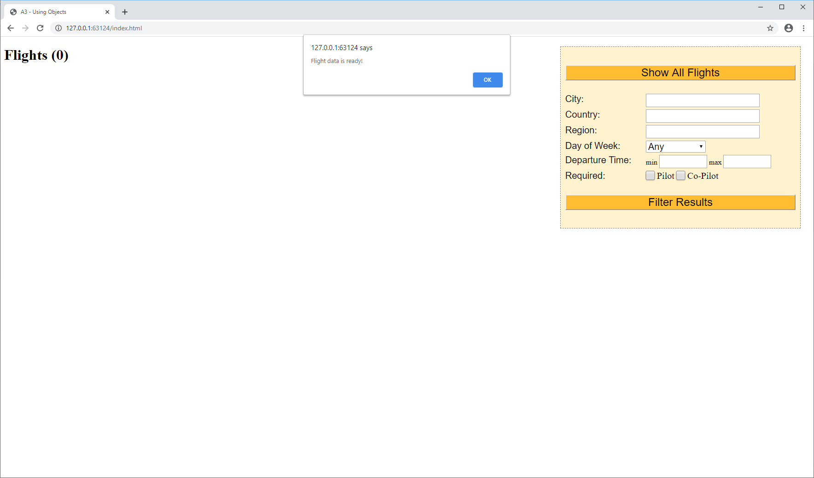
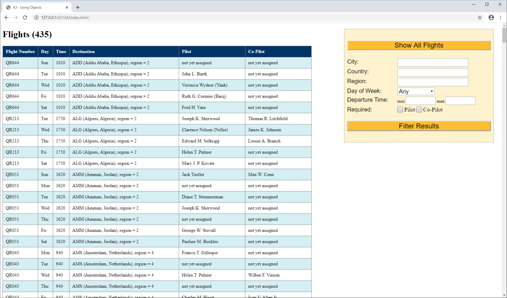
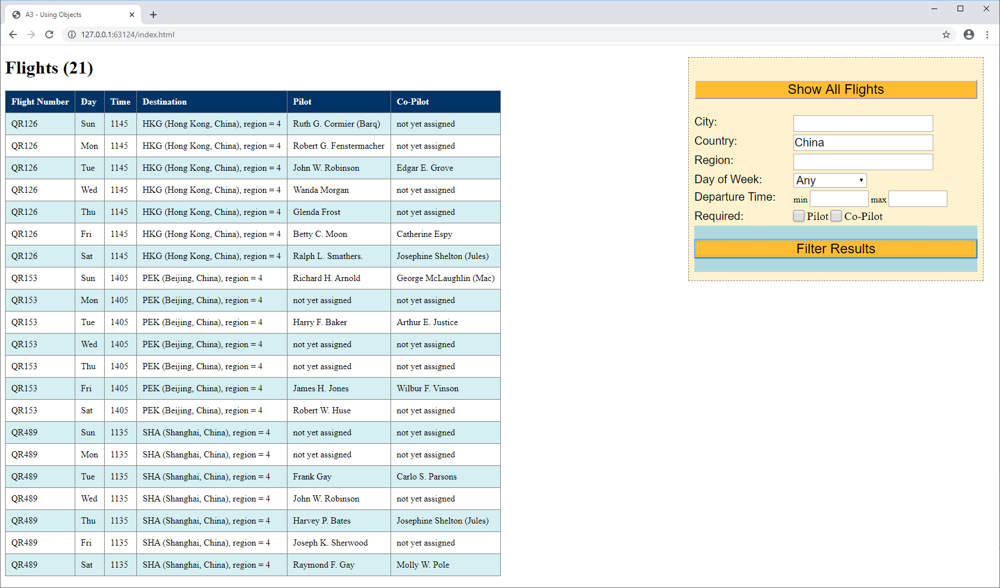
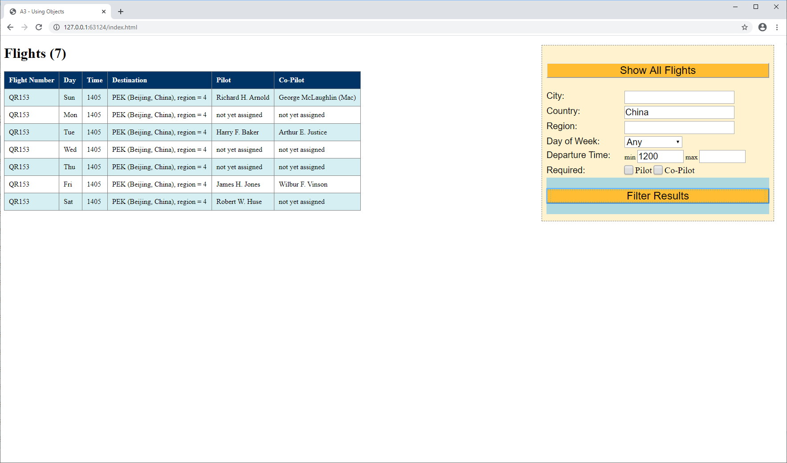
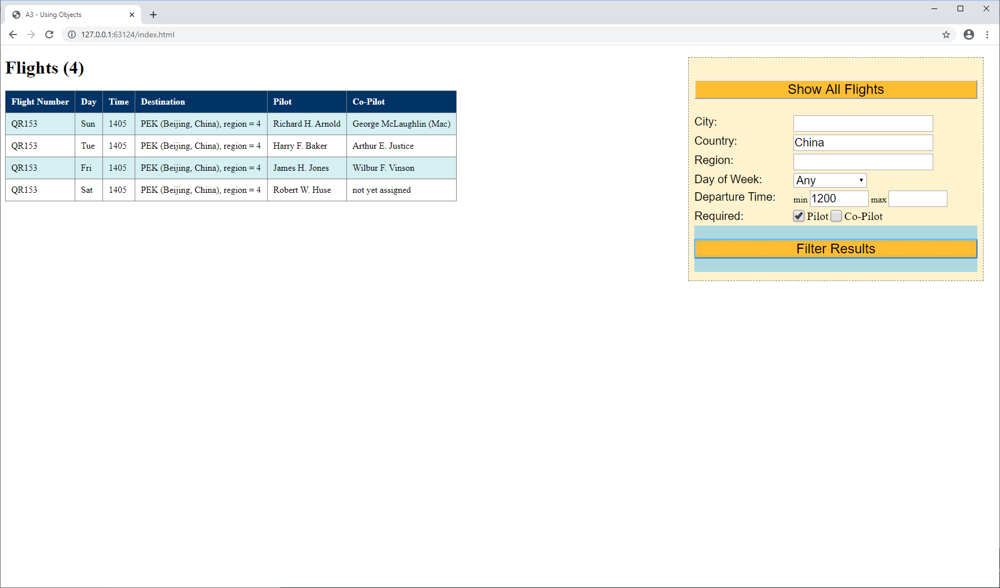

Assignment 3 - Using Objects
Background
The file "flights.json" contains flight objects in JSON format. Note that some objects have a "pilot" and/or "copilot" field, and some do not. Also, note that some pilots and copilots have nicknames, and some do not.
In JavaScript, if you refer to a field that does not exist, it is not an error; instead, the special value, undefined, is used. For example, suppose you have a flight object, f. If f has a pilot, then "f.pilot" refers to the pilot; but if f does not have a pilot, then "f.pilot" refers to undefined.
Instructions
- Design the basic page layout and the input panel with the flight search parameters.
- The "Day of Week" drop-down list (
<select>and<option>tags) should contain eight entries - the word "Any" and the seven days of the week. - For the "Pilot" and "Co-Pilot" inputs, use
<input type='checkbox'>.
- The "Day of Week" drop-down list (
- When the application starts, make an AJAX call to read the file "flights.json". When the read completes:
- Parse the data, and store it in a global variable, allFlights.
- Display a popup message to indicate that the application has finished reading the file.
- When the "Show All Flights" button is clicked, loop through allFlights and display the flights in a table. Match the provided samples as closely as possible. Also, display the number of flights in the parentheses beside the page title.
- When the "Filter Results" button is clicked, create a new array that contains only the flights that match the active filters specified on the panel. (If multiple filters are active, they must all be met for a flight to be included in the new array.)
Inactive filters can be ignored:
- The filters for city, country, region, time min, and time max are inactive if empty.
- The filter for the day of the week is inactive if "Any" is selected.
- The filter for pilot and copilot are inactive if unchecked.
Screen Shots
Opening Screen
All Flights / No Filters
One Filter
Two Filters
Three Filters
*** The End ***